flowchart LR
D[Dice / IoU] --> D1[Superposición global]
H[Hausdorff] --> H1[Peor discrepancia de borde]
Clase 2 — ¿Cómo evaluamos una segmentación?
Terminamos con una pregunta:
¿Cómo sabemos si una segmentación automática es suficientemente buena?
En la clase anterior vimos que:
Hoy pasamos de la segmentación a su evaluación.
Al finalizar la clase deberían poder:
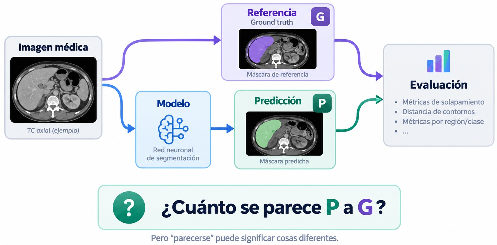
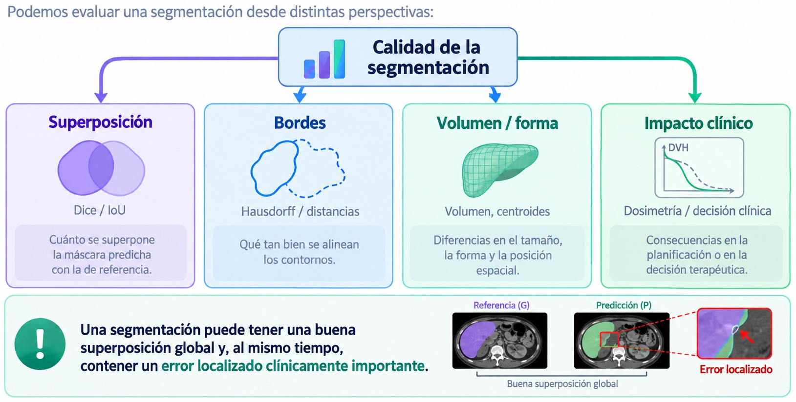
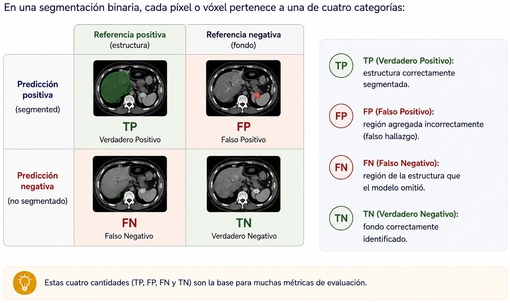
En clasificación convencional, una observación suele producir una entrada de la matriz de confusión.
En segmentación:
cada píxel o vóxel contribuye a la matriz de confusión.
Para un volumen de (512):
\[ 512\cdot512\cdot200 \approx 52\,\text{millones de vóxeles} \]
Esto introduce un problema: la mayoría puede ser simplemente fondo.
Supongamos que una lesión ocupa solo el (1%) del volumen.
Un modelo que predice todo como fondo obtiene:
\[ \text{Accuracy}\approx 99\% \]
pero:
\[ \text{segmentación de la lesión}=0 \]
Advertencia
En segmentación médica, la accuracy global suele estar dominada por el fondo y puede ocultar un fracaso completo sobre la estructura de interés.
Por eso preferimos métricas centradas en la región positiva.
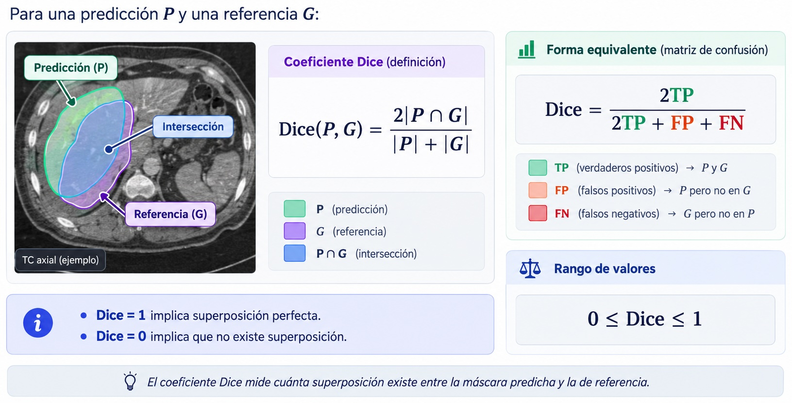
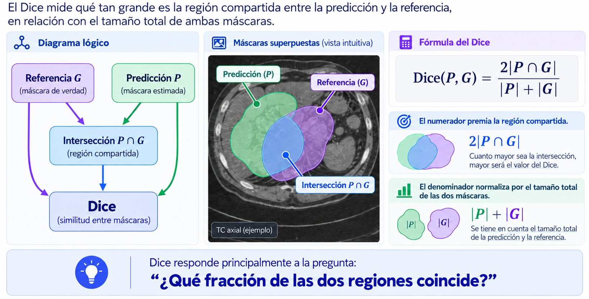
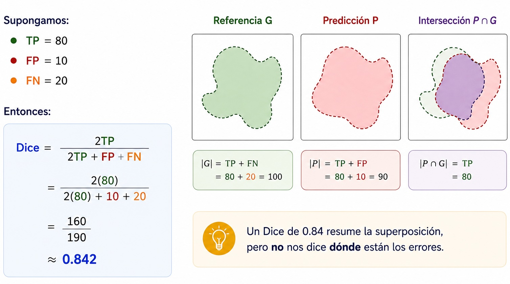
No necesariamente.
El mismo valor puede tener significados distintos dependiendo de:
Una métrica necesita siempre contexto anatómico y clínico.
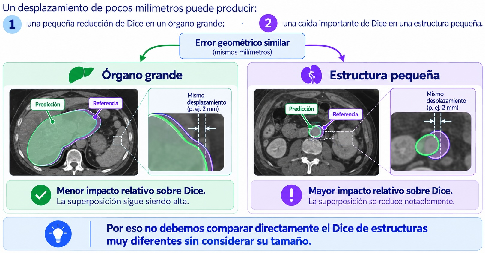
Dos máscaras pueden tener una gran región común y alcanzar un Dice elevado.
Sin embargo, un pequeño sector del borde puede desviarse considerablemente.
Esto importa especialmente:
Necesitamos métricas que miren explícitamente la superficie.
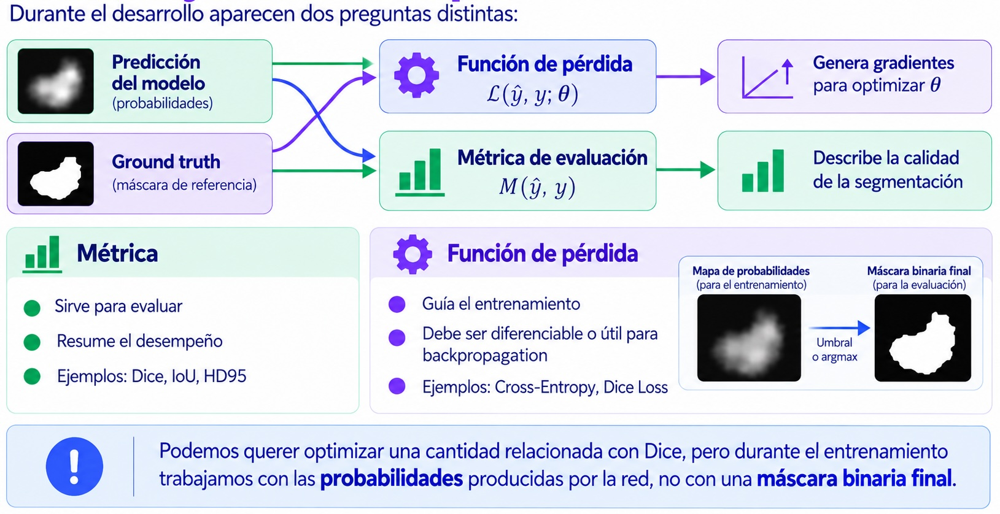
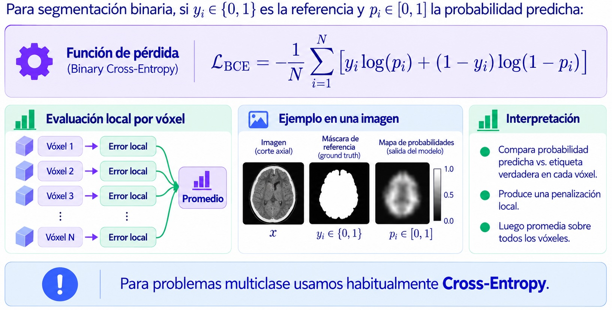
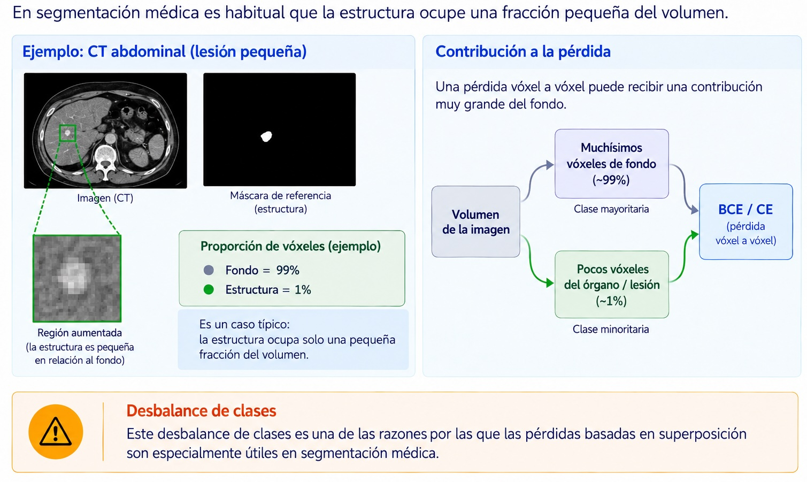
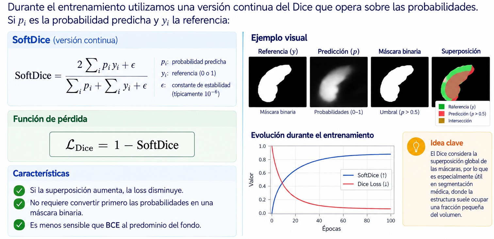
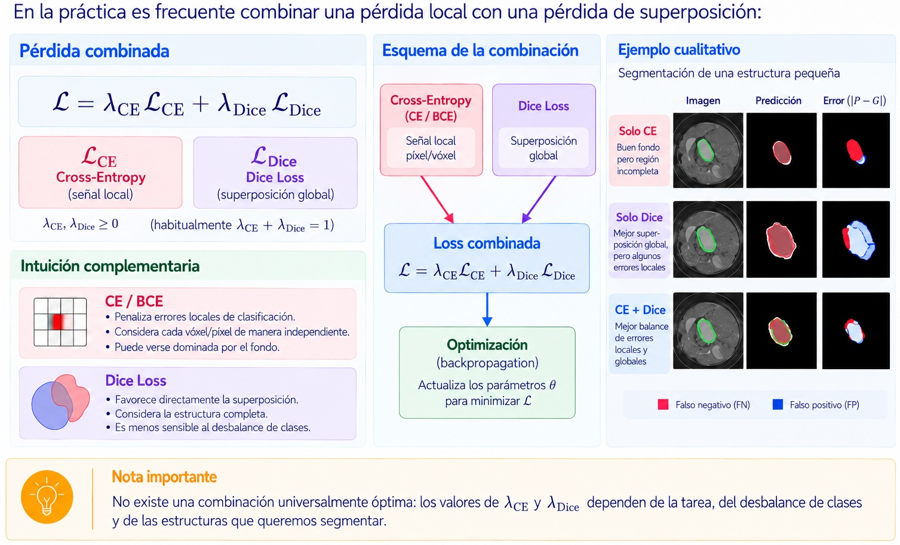
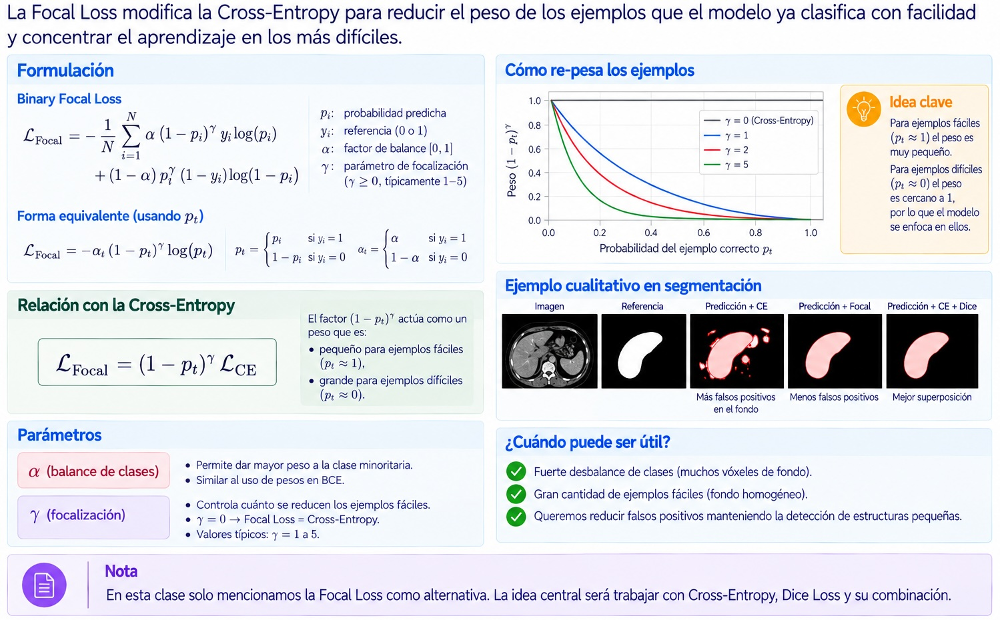
Supongamos que durante el entrenamiento:
\[ \mathcal{L}_{val} \downarrow \]
Esto indica que el objetivo matemático está mejorando sobre validación.
Pero todavía debemos preguntar:
La función de pérdida guía el aprendizaje; las métricas y la revisión clínica evalúan el resultado.
Sea:
Ahora la pregunta cambia:
¿Qué tan lejos están los bordes entre sí?
Para cada punto de una superficie podemos buscar su punto más cercano en la otra.
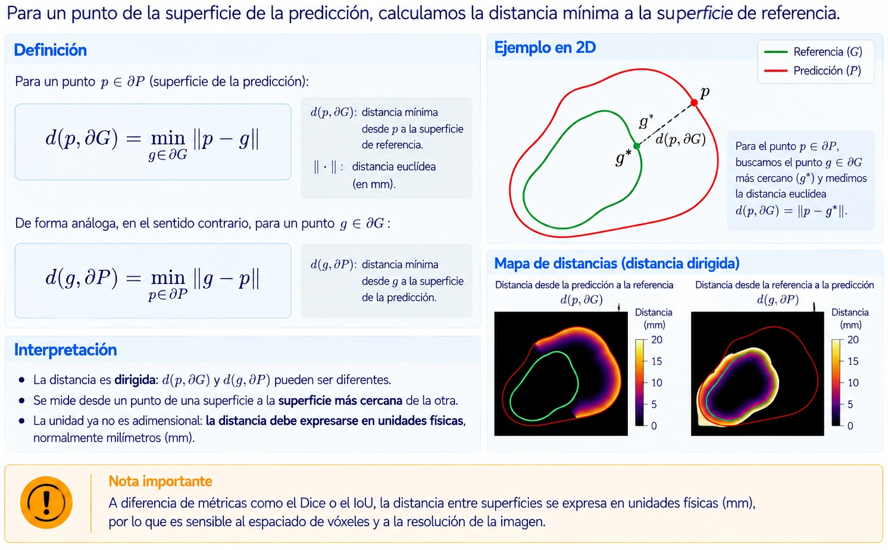
La distancia de Hausdorff toma el peor desacuerdo entre las superficies:
\[ H(P,G)= \max \left\{ \sup_{p\in\partial P} d(p,\partial G), \sup_{g\in\partial G} d(g,\partial P) \right\} \]
En palabras:
¿Cuál es el punto del contorno que está más lejos de la otra superficie?
Menor es mejor.
Dice e IoU pueden permanecer altos aunque exista una desviación localizada.
Hausdorff es sensible a ese tipo de error.
flowchart LR
D[Dice / IoU] --> D1[Superposición global]
H[Hausdorff] --> H1[Peor discrepancia de borde]
Importante
Las métricas de superposición y las métricas de superficie responden a preguntas diferentes y son complementarias.
La Hausdorff clásica utiliza el máximo.
Por lo tanto, un único punto aberrante puede dominar completamente la métrica.
Ejemplos:
Resultado:
\[ \text{un outlier} \rightarrow \text{Hausdorff muy grande} \]
Una práctica habitual es utilizar el percentil 95 de las distancias de superficie:
\[ HD_{95} = P_{95} \left( \{d(p,\partial G)\}\cup \{d(g,\partial P)\} \right) \]
Interpretación:
El \(95\%\) de las discrepancias de superficie se encuentra por debajo de ese valor.
Esto reduce la sensibilidad a unos pocos puntos extremos.
Nota
HD95 no reemplaza conceptualmente a Hausdorff: cambia deliberadamente la pregunta para obtener una medida más robusta.
En imágenes médicas, un vóxel no tiene necesariamente el mismo tamaño en todas las direcciones.
Por ejemplo:
\[ 0.8\times0.8\times3.0\ \mathrm{mm^3} \]
Una distancia calculada solo en índices de vóxel puede ser físicamente incorrecta.
Advertencia
Las métricas de distancia deben calcularse utilizando el pixel/voxel spacing real de la imagen.
Especialmente en estudios anisotrópicos.
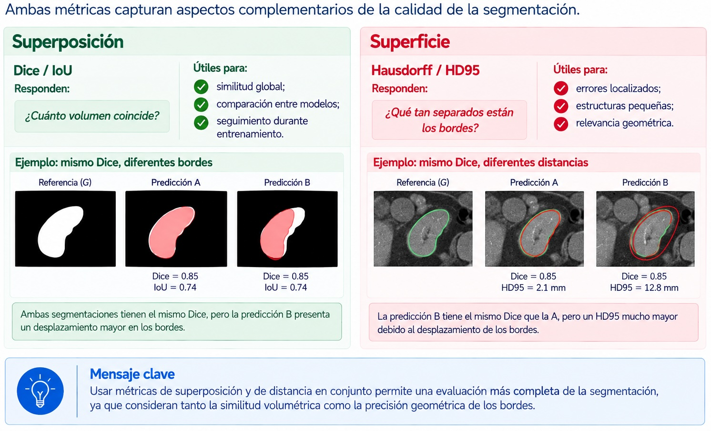
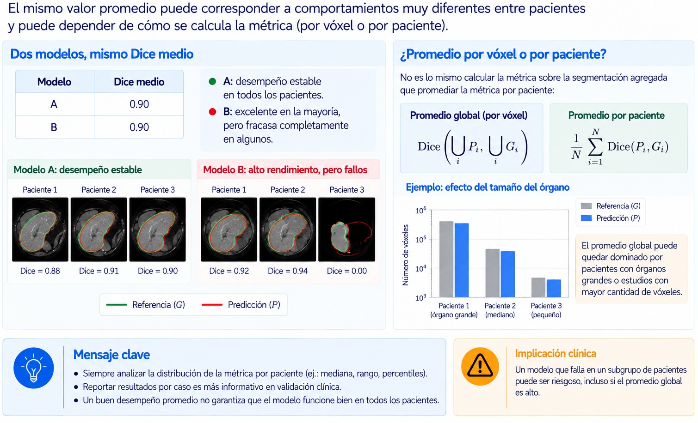
En un problema con (K) estructuras podemos calcular una métrica por clase:
\[ \mathrm{Dice}_1,\; \mathrm{Dice}_2,\; \dots,\; \mathrm{Dice}_K \]
No debemos asumir que todas las clases tienen la misma dificultad.
Ejemplo:
Reportar solo un promedio global puede ocultar qué estructuras fallan.
Macro average
\[ \mathrm{Dice}_{macro} = \frac{1}{K}\sum_{k=1}^{K}\mathrm{Dice}_k \]
Cada clase tiene el mismo peso.
Micro / global
Agrega primero los TP, FP y FN de todas las clases y luego calcula la métrica.
Nota
En conjuntos desbalanceados, el promedio global puede quedar dominado por las estructuras más grandes.
Para Física Médica suele ser importante reportar resultados por estructura.
Puede ocurrir que una estructura o lesión no esté presente en un caso.
Entonces:
\[ |P|=0,\qquad |G|=0 \]
y Dice queda matemáticamente indeterminado:
\[ \frac{0}{0} \]
Debemos definir explícitamente la convención:
Lo importante es que la política sea explícita y consistente.
flowchart LR
A[Pregunta clínica] --> M[Selección de métricas]
M --> O[Overlap]
M --> S[Superficie]
M --> C[Impacto clínico]
Ejemplos:
Importante
No existe una métrica universal que determine por sí sola si una segmentación es clínicamente aceptable.
flowchart LR
D[Dataset] --> T[Training]
D --> V[Validation]
D --> E[Test]
T --> T1[Ajustar parámetros]
V --> V1[Elegir modelo<br/>e hiperparámetros]
E --> E1[Evaluación final]
Durante el desarrollo usamos el conjunto de validación repetidamente.
El test debe permanecer reservado hasta que el proceso de desarrollo esté definido.
En imágenes médicas, un paciente puede aportar:
Advertencia
No debemos colocar imágenes del mismo paciente en entrenamiento y validación/test.
De lo contrario aparece data leakage y el desempeño puede quedar artificialmente inflado.
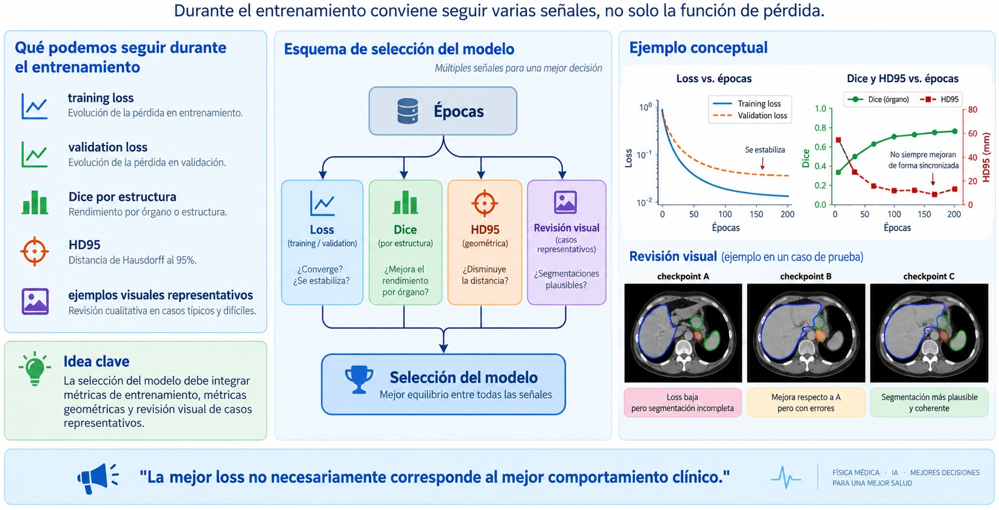
Para cada experimento:
Esto permite que la validación sea reproducible y no una inspección informal.
No solamente:
“Dice promedio = 0.91”
Sino también:
Una buena evaluación combina:
\[ \boxed{ \text{superposición} + \text{distancia} + \text{distribución por paciente} + \text{contexto clínico} } \]
Ideas para llevarse:
Dos modelos tienen el mismo Dice promedio.
Uno tiene errores pequeños en todos los pacientes y el otro falla por completo en unos pocos casos.
¿Diríamos que tienen el mismo desempeño clínico?